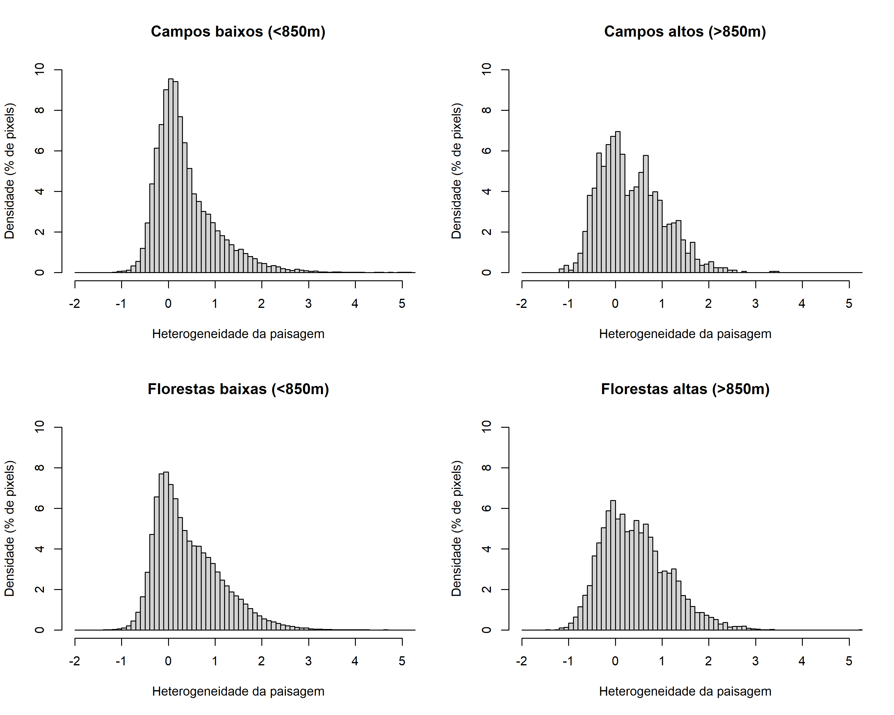
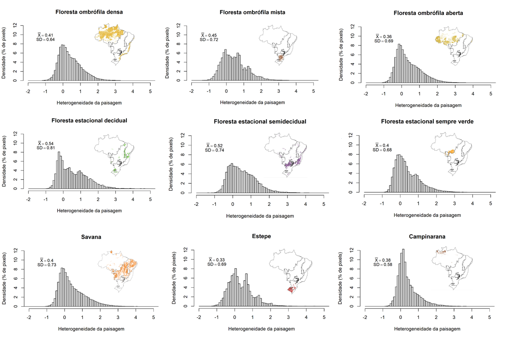

9 Refinamento das análises
A presente análise se baseou no mapeamento de áreas resilientes para a América do Norte (Anderson et al., 2014). Com base em discussões internas realizadas pela equipe central do projeto e com base nos comentários e sugestões de especialistas temáticos, foram realizados ajustes nas análises para melhorar o mapeamento da resiliência para o território brasileiro. Abaixo, são incluídos os principais refinamentos realizados, assim como a explicação de alguns pontos de atenção importantes que surgiram ao longo do processo de criação do projeto.
9.1 Premissas, definições e termos utilizados
As premissas principais consideradas no estudo estão descritas no item Modelo conceitual e premissas (Capítulo 7). O glossário de termos consta no item Glossário (Capítulo 6).
Entre as premissas consideradas no estudo original conduzido nos EUA, a proposição de uma associação positiva entre biodiversidade e geodiversidade não foi considerada como uma premissa básica neste estudo pela ausência de evidências claras para regiões tropicais. Além disso, no estudo anterior conduzido nos EUA, consta o termo “diversidade da paisagem” ao invés de “heterogeneidade da paisagem”, utilizado aqui. Isso se deu, pois em nossa avaliação, não utilizamos uma medida de diversidade propriamente dita, mas sim um indicador da variabilidade de ambientes. Decisão semelhante se deu no uso do termo “riqueza de solos”, medida efetivamente usada para a análise de tipos de solos, ao invés de “diversidade de solos”, como utilizada no estudo anterior.
9.2 Configurações geofísicas (geophysical settings) e janelas móveis
No estudo original foi utilizada uma camada chamada configurações geofísicas (geophysical settings, em inglês) que considerava variáveis de litologia e eco-regiões, de modo a regionalizar o território e calcular valores de Z por região. O objetivo da utilização dessas regiões seria pela regionalização dos valores de heterogeneidade da paisagem e de conectividade local, visto que pode ser interessante saber qual é o desvio das áreas em relação à média regional, gerando uma contextualização regional das características de heterogeneidade e conectividade.
Neste estudo, a regionalização produziu mudanças abruptas nos valores de Z, dadas as delimitações das regiões. Para suavizar os valores de Z substituímos as regionalizações por janelas móveis, assim cada região representa o desvio da média no seu entorno, não o desvio de uma região fixa. Essa técnica de janelas móveis, também conhecida como filtros ou convolução, foi a técnica selecionada para a regionalização dos dados. O tamanho da janela móvel na análise (circular com raio de 200 pixels) foi definido através de testes em que não se observaram padrões espaciais destoantes das estruturas espaciais conhecidas (por exemplo, descontinuidades espaciais abruptas inexistentes).
9.3 Definição do raio de análise
O tamanho da janela para o cálculo da variedade de formas de relevo, amplitude altitudinal e índice de áreas úmidas foi definido calculando as variáveis em diferentes tamanhos de janelas (2, 5, 7, 10, 15 e 20 células de raio). Calculamos a média para o Brasil para cada variável em cada janela. O tamanho definido foi aquele que, ao aumentarmos o raio, não promoveu aumento na média da variável.
9.4 Índice topográfico: TPI em substituição ao LPI
No estudo original de Anderson et al. (2014, 2023), foi utilizado como índice de posição topográfica o Land Position Index (LPI) (Fels & Matson, 1996), descrito como:
\[ LPI = (\sum_{i = 1}^n (x_i - x_0)/ d_{i0})/n \]
Nesse índice, a posição topográfica é calculada como a diferença média da célula focal (xi) para outras células (x0) ponderado pela distância entre as células (di0), n é o número de células. O cálculo é realizado usando kernel anelar de diferentes tamanhos.
No nosso estudo, optamos por utilizar o Topographic Position Index (TPI) (Theobald et al. xx), por permitir considerar o efeito de diferentes escalas espaciais no cálculo da posição topográfica. Esse índice de posição topográfica média é descrito como:
\[ TPI = \sum_{j = 1}^m (\sum_{i = 1}^n (x_i - x_0)/n)/m \]
sendo m o número de escalas espaciais.
9.5 Avaliação entre tipos de ecossistema (campo vs. floresta)
Com o objetivo de verificar se a análise geraria alguma tendência ou viés para algum tipo de fisionomia vegetal (i.e., se eventualmente favoreceria áreas florestais ao invés de áreas campestres), avaliamos as diferenças nos valores de heterogeneidade da paisagem para campos e florestas.
Primeiramente fizemos comparações entre áreas campestres de altas e baixas altitudes no Brasil todo. Campos de altitude são formações vegetais não-florestais que ocorrem em áreas de altitudes elevadas (superior a 850 m acima do nível do mar). Devido a sua distribuição restrita e isolada nos cumes de montanhas, avaliamos a distribuição dos valores de heterogeneidade da paisagem com relação a áreas campestres de baixas altitudes, partindo da hipótese de que eventualmente os locais mais elevados poderiam apresentar menores valores de heterogeneidade da paisagem. O mesmo foi feito para áreas florestais em diferentes altitudes.
A comparação foi realizada entre frequência dos valores de heterogeneidade da paisagem em áreas de altitudes mais elevadas (superior a 850 m) e áreas de altitudes mais baixas (inferiores a 850 m) para cada uma das formações vegetacionais descritas acima. Fizemos isso através de histogramas gerados a partir dos valores da imagem raster de heterogeneidade da paisagem. Além disso, calculamos médias e desvio padrão da heterogeneidade da paisagem para cada uma das condições descritas anteriormente.
Os resultados desse teste indicaram que os valores de heterogeneidade da paisagem entre formações campestres e florestais, tanto em altitudes elevadas como em regiões mais baixas, estão distribuídos de maneira semelhante (Figura 9.1), com médias e desvios similares (campo baixo, 0.35 ± 0.64 ; campo alto, 0.33 ± 0.69; floresta baixa, 0.42, ±0.70; floresta alta, 0.43, ±0.71). Portanto, não foram encontradas tendências nas estimativas de heterogeneidade da paisagem entre diferentes formações vegetais em diferentes faixas de altitude.

Adicionalmente à análise anterior, realizamos também a comparação da heterogeneidade da paisagem entre as principais fitofisionomias que ocorrem dentro do território brasileiro: florestas ombrófilas e estacionais, savana, estepe e campinarana. Para isso, extraímos os valores dos raster de heterogeneidade da paisagem que se sobrepunham com os polígonos das fitofisionomias mapeadas na carta de vegetação produzida pelo Instituto Brasileiro de Geografia (IBGE) em escala 1:250.000 (https://www.ibge.gov.br/geociencias/informacoes-ambientais/vegetacao/22453-cartas-1-250-000.html?=&t=downloads) no QGIS 3.28 (QGIS Development Team, 2023). Em seguida, produzimos histogramas com a densidade dos valores e transformamos os valores de densidade em porcentagem para torná-los comparáveis entre as diferentes fitofisionomias.
Foram calculadas a média e o desvio de heterogeneidade da paisagem para cada uma das fitofisionomias (Figura 9.2). Do mesmo modo como obtido anteriormente, não encontramos tendências na distribuição dos valores de heterogeneidade da paisagem para as diferentes fitofisionomias (Figura 9.2), com valores pouco destoantes entre cada uma delas.

9.6 Consideração sobre a largura dos rios na análise de resistência
Considerando que corpos d’água com diferentes larguras podem representar barreiras mais ou menos eficientes ao deslocamento dos organismos terrestres na paisagem, incluímos essa característica (largura do corpo d’água) para diferenciar os valores de resistência oferecidos pelas águas abertas. A descrição sobre esta análise está indicada no item de metodologia de Conectividade local (Capítulo 12).
9.7 Nova camada de resiliência da paisagem (bivariada)
No estudo original conduzido nos EUA, a camada final de resiliência era gerada a partir da média dos valores de Z de heterogeneidade da paisagem e de conectividade local. Esse modo de apresentação, entretanto, não permitia identificar a influência de uma ou outra camada no valor final de resiliência (por exemplo, se maior influência era de heterogeneidade da paisagem ou de conectividade local). O detalhamento destas informações é importante para identificar quais condições estão mais limitantes ou mais favoráveis à resiliência local, sendo essenciais para o planejamento de ações voltadas para a manutenção da biodiversidade.
Para melhorar a visualização da influência de cada uma das variáveis e de como a resiliência da paisagem muda em função de cada uma delas, optamos por apresentar a camada final de resiliência como um mapa bivariado. A partir da classificação em quartis com 25% dos dados e posterior sobreposição dos dois mapas, foi possível criar uma escala de cores para a resiliência da paisagem (conforme apresentado na Figura 9.3).